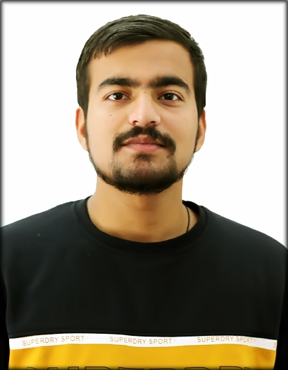

KUNAL SHARMA
SUMMARY
As an enthusiastic and detail-oriented recent graduate with a strong foundational knowledge of networking principles and
Software Development my career objective is to leverage my existing skills while constantly expanding my horizons. I am
deeply committed to continuous learning, eager to absorb new skills, and passionate about cultivating a diverse range of
experiences. I thrive on challenges and aim to excel in every task with unwavering dedication and a proven ability to meet
deadlines.
My educational background has equipped me with a solid understanding of Software Development, networking
fundamentals, and I am excited to translate this knowledge into real-world applications. My goal is to contribute my
technical expertise and effective communication skills to a dynamic team. I aspire to embark on a fulfilling journey as an
entry-level network technician or software developer, where I can actively contribute to innovative projects and further
develop my professional acumen.
EDUCATION
- Bhagwan Parshuram Institute of Technology
B.Tech Degree in Computer Science Engineering
2018-2022
- Oriental Academy School, J&K
12th Standard
2017-2018
- St Peters High School, J&K
10th Standard
2015-2016
PROJECTS
- Sign Language Recognition
01/30/2022 - 07/28/2022
- Developed a real-time sign language gesture recognition system capable of detecting various signs and alphabets. Provided text and audio outputs for seamless sign interpretation
- Prioritized simplicity while maintaining high accuracy. Created an intuitive model for sign detection and interpretation.
- Leveraged Mediapipe for precise hand tracking and gesture recognition. Designed for real-time output, ensuring practical use in immediate sign interpretation.
- It aims to bridge the communication gap, empowering the deaf and hard-of-hearing community. Committed to ongoing refinement and optimization for improved sign language recognition
- Speedy Safe
10/05/2021 - 12/27/2021
- Developed a user-friendly Android application with a focus on assisting beginner drivers. Developed a user-friendly Android application with a focus on assisting beginner drivers
- Utilized Android Studio as the primary development environment. Employed Android Development API for app functionalities and interfaces. Leveraged Firebase for secure storage of user data, SOS contacts, and hospital information. Implemented Java for app logic and functionality
- Incorporated GPS-based speed calculation for precise monitoring of vehicle speed. Allowed users to customize their speed limits, with a default setting of 40 Km/h. Implemented instant speed alerts to encourage safe driving practices.
- Adapted to dynamic development challenges, gaining valuable experience as a newcomer to Android development. Improved team management skills through collaborative work with fellow developers. Deepened understanding of Android app development processes and techniques, enhancing overall expertise.
- Ecommerce Website with Front-End Web Development and Web Design
12/10/2021 - 12/15/2021
- Created a comprehensive e-commerce website with a primary focus on front-end web development and user interface design. Leveraged web design principles and front-end technologies to build an engaging and visually appealing website.
- Utilized front-end web development techniques to craft a userfriendly web interface. Employed Firebase for real-time communication, particularly on the "Contact Us" page
- Developed multiple web pages that collectively formed a complete e-commerce website
- Incorporated visual and hover effects to improve website aesthetics and interactivity. Ensured responsive design for accessibility across various devices and screen sizes
- Gained valuable insights into the impact of user interface design on overall user experience and developed skills in web development and design, laying the foundation for future projects.
SKILLS
- Web Development
- Java
- AWS Cloud Fundamentals
- DBMS
- SQL
- Github
- Python
- Javascript
- Networking
CERTIFICATIONS
PUBLICATIONS
Automated Indian Sign Language Recognition System Using LSTM Models
- Our research primarily centers on the efficient and effective detection of sign language. Conventionally, sign detection relies on either hardware sensors or CNN (Convolutional Neural Network) models. While hardware sensors can be efficient, they often pose cost challenges. On the other hand, CNN models offer a balance of accuracy and costeffectiveness, prompting us to opt for a software-based approach over hardware. We have leveraged numerical keypoints and landmarks to recognize various signs, employing a Recurrent Neural Network (RNN) framework. This RNN incorporates various Long Short Term Memory (LSTM) models. Our research aims to elucidate the outcomes achieved by different LSTM variants and assess the overall performance and efficiency of this software-driven approach.
- Paper Link: https://doi.org/10.1109/ICCCIS56430.2022.10037711
CONTACT